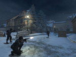

Friday, May 12th 2006
We hope everyone who is playing through the first Sin Episode, Emergence is enjoying the game. From the feedback we've seen, it appears that people are having a lot of fun. It's exciting for us at Valve to see the first episodic game released on Steam, and we're looking forward to our own Episode One coming out in a little less than three weeks.
Counter-Strike: Source and Day of Defeat: Source are also both gearing up for releases in the next few weeks. Counter-Strike: Source has more HDR-enabled versions of maps on the way, along with some enhancements to the game itself. Day of Defeat: Source is getting ready for a significant release that will add a number of new features, along with a new map named Colmar. Colmar is the first map to take advantage of a new objective system that allows us to build different kinds of levels than currently exist. Stay tuned for specifics on how the map plays out, but for now here's a screenshot of the sleepy night-time village.
